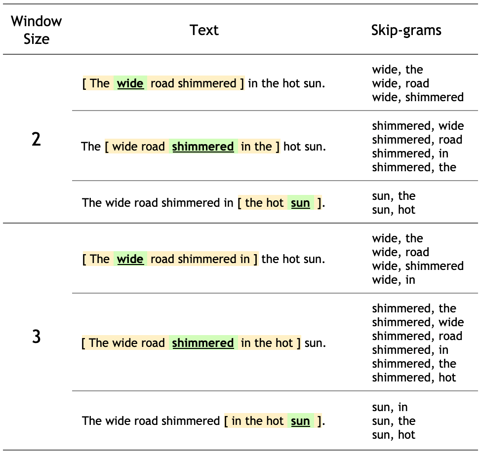

4.3 Word2Vec
Implement a skip-gram word2vec model with negative sampling from scratch!
Created Date: 2025-05-24
Josh Starmer's Word Embedding and Word2Vec, Clearly Explained is the picture for this page.
word2vec is not a singular algorithm, rather, it is a family of model architectures and optimizations that can be used to learn word embeddings from large datasets. Embeddings learned through
Note: This tutorial is based on Efficient estimation of word representations in vector space and Distributed representations of words and phrases and their compositionality. It is not an exact implementation of the papers. Rather, it is intended to illustrate the key ideas.
These papers proposed two methods for learning representations of words:
Continuous bag-of-words model: predicts the middle word based on surrounding context words. The context consists of a few words before and after the current (middle) word. This architecture is called a bag-of-words model as the order of words in the context is not important.
Continuous skip-gram model: predicts words within a certain range before and after the current word in the same sentence. A worked example of this is given below.
We'll use the skip-gram approach in this tutorial. First, we'll explore skip-grams and other concepts using a single sentence for illustration. Next, we'll train your own word2vec model on a small dataset. This tutorial also contains code to export the trained embeddings and visualize them in the TensorFlow Embedding Projector.
4.3.1 Skip-gram
While a bag-of-words model predicts a word given the neighboring context, a skip-gram model predicts the context (or neighbors) of a word, given the word itself. The model is trained on skip-grams, which are n-grams that allow tokens to be skipped (see the diagram below for an example). The context of a word can be represented through a set of skip-gram pairs of (target_word, context_word) where context_word appears in the neighboring context of target_word.
Consider the following sentence of eight words:
The wide road shimmered in the hot sun.
The context words for each of the 8 words of this sentence are defined by a window size. The window size determines the span of words on either side of a target_word that can be consider a context_word. Below is a table of skip-grams for target words based on different window sizes.
Note: For this tutorial, a window size of n implies n words on each side with a total window span of \(2n + 1\) words across a word.

The training objective of the skip-gram model is to maximize the probability of predicting context words given the target word. For a sequence of words \(w_1, w_2, \cdots , w_T\), the objective can be written as the average log probability:
where \(c\) is the size of the training context. The basic skip-gram formulation defines this probability using the softmax function:
where \(v_w\) and \(v_w'\) are the "input" and "output" vector representations of \(w\), and \(W\) is the number of words in the vacabulary. This formulation is impractical because the cost of computing \(\nabla log(p(w_O \mid w_I))\) is proportional to \(W\), which is often large \((10^5 - 10^7)\) terms.
The noise contrastive estimation (NCE) loss function is an efficient approximation for a full softmax. With an objective to learn word embeddings instead of modeling the word distribution, the NCE loss can be simplified to use negative sampling.
The simplified negative sampling objective for a target word is to distinguish the context word from num_ns negative samples drawn from noise distribution \(P_n(w)\) of words. More precisely, an efficient approximation of full softmax over the vocabulary is, for a skip-gram pair, to pose the loss for a target word as a classification problem between the context word and num_ns negative samples.
A negative sample is defined as a (target_word, context_word) pair such that the context_word does not appear in the window_size neighborhood of the target_word. For the example sentence, these are a few potential negative samples (when window_size is 2).
(hot, shimmered) (wide, hot) (wide, sun)
In the next section, you'll generate skip-grams and negative samples for a single sentence. You'll also learn about subsampling techniques and train a classification model for positive and negative training examples later in the tutorial.
4.3.2 Setup
The single-sentence walkthrough is simple_vectorize.py. It lowercases one sentence, builds a tiny vocabulary, and emits positive skip-gram pairs. The file ends after it unpacks the first pair and sets num_ns = 4. Noise samples, a training tensor, and an embedding module are later steps, and they are not in this script.
4.3.2.1 Vectorize an Example Sentence
Consider the following sentence:
The wide road shimmered in the hot sun.
Create a vocabulary to save mappings from tokens to integer indices:
Create an inverse vocabulary to save mappings from integer indices to tokens:
That sentence is the string hardcoded in simple_vectorize.py. The script lowercases it and splits on spaces, which yields the eight tokens the wide road shimmered in the hot sun.
Index 0 is reserved for <pad>. Each new token takes the next integer, so the first the is 1 and the second the reuses 1. inverse_vocab flips the dictionary. example_sequence is the sentence rewritten as those integers, and the script prints the vocab, the inverse map, and that sequence.
4.3.2.2 Generate Skip-grams from One Sentence
skipgrams_torch walks each token as a target. With window_size = 2 it takes up to two tokens on each side, skips the target itself, and appends (target, context) pairs of integer ids.
Tokens at the ends have a shorter window, because the slice is clamped to the sequence. The script prints every pair twice: once as ids and once through inverse_vocab, so a line can be read as both (wide, road) and the matching integers.
4.3.2.3 Negative Sampling for One Skip-gram
Negative sampling turns one positive pair into a small classification problem. The true context word is the positive class, and num_ns other vocabulary ids are the noise class. simple_vectorize.py sets num_ns = 4 and unpacks positive_skip_grams[0] into target_word and context_word.
A draw of those four ids should skip the true context, and it usually samples more often from frequent tokens. The script sets the count and stops. The noise ids themselves are not sampled.
4.3.2.4 Construct One Training Example
One training row is the target id, a context vector of length 1 + num_ns (the true context, then the noise ids), and a label vector that is 1 on the true context and 0 on the noise.
The pairs printed by simple_vectorize.py are only the positive half of that row. The file never stacks the three tensors. The compiled function described in the next section is where a full example would be assembled, and that function is not in the script.
4.3.3 Compile All Steps Into One Function
A large dataset means larger vocabulary with higher number of more frequent words such as stopwords. Training examples obtained from sampling commonly occurring words (such as the, is, on) don't add much useful information for the model to learn from. Mikolov et al. suggest subsampling of frequent words as a helpful practice to improve embedding quality.
Compile all the steps described above into a function that can be called on a list of vectorized sentences obtained from any text dataset. Notice that the sampling table is built before sampling skip-gram word pairs. You will use this function in the later sections.
4.3.4 Prepare Training Data For word2vec
With an understanding of how to work with one sentence for a skip-gram negative sampling based word2vec model, you can proceed to generate training examples from a larger list of sentences!
4.3.4.1 Download Text Corpus
simple_vectorize.py never leaves the eight-word sentence. There is no corpus path, checksum, or cached text file in 04_rnn/3_word2vec.
A corpus for this model is a list of sentences. Raw text already sits elsewhere in the repo: demo_text_data.py reads the movie-review files. Those strings could be split into sentences and passed through the same tokenizer. This page does not connect the two.
4.3.4.2 Vectorize Sentences from the Corpus
Vectorizing a corpus repeats the one-sentence map: one shared vocabulary, then a list of integer sequences. The script builds that map for a single sentence, where the second the reuses the same id, and prints example_sequence.
On a larger corpus the usual extra steps are to count tokens, drop the rare ones, and keep index 0 for <pad> the way the example does. None of that counting is in the file. The only sequence it produces is the eight-token example.
4.3.4.3 Generate Training Examples from Sequences
Generating a training set means running the skip-gram window and the negative-sample step on every sequence, then concatenating targets, contexts, and labels into tensors a loader can batch.
skipgrams_torch does the window for one sequence and returns a Python list of positive pairs. The script does not allocate the label tensor or stack a batch. Section 4.3.3 describes the function that would also subsample frequent words before that concatenation, and the function is not implemented in simple_vectorize.py.
4.3.5 Model and Training
The word2vec model can be implemented as a classifier to distinguish between true context words from skip-grams and false context words obtained through negative sampling. You can perform a dot product multiplication between the embeddings of target and context words to obtain predictions for labels and compute the loss function against true labels in the dataset.
4.3.5.1 Subclassed word2vec Model
A skip-gram model with negative sampling is two embedding tables, one for the target id and one for the context ids. The score of a pair is their dot product, and a sigmoid of that score is the probability the pair is a real context.
No nn.Module for those tables lives under 04_rnn/3_word2vec. simple_vectorize.py produces integer ids only. The forward pass those ids are waiting for is a lookup in each table and a batched dot product against the positive and negative contexts.
4.3.5.2 Define Loss Function and Compile Model
The matching loss is binary cross-entropy on the sigmoid scores, with label 1 for the true context and 0 for each negative sample. That is the same BCELoss shape as in the fully connected chapter, applied to a dot product of embeddings.
The word2vec directory does not construct an optimizer or a loss module, so there is no training curve from this script. The concrete BCELoss call in the repo is the four-element demo in demo_bce_loss.py.
4.3.6 Embedding Lookup and Analysis
This tutorial has shown you how to implement a skip-gram word2vec model with negative sampling from scratch and visualize the obtained word embeddings.